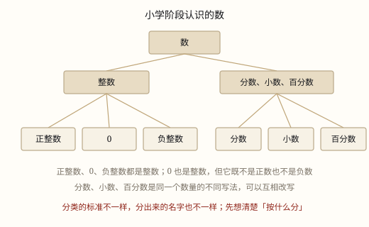

数的分类与意义
整数、小数、分数、百分数、负数不是五个孤立的定义，而是同一批数在不同场合的几种写法。
| 所属主题 | 数的意义和性质 |
|---|---|
| 所属模块 | 数与代数 |
| 课标学段 | 第三学段（5~6年级） |
| 前置知识 | 100 以内数的组成与数位、十进制计数法与数位顺序表 |
| 核心素养 | 数感符号意识 |
教材定位
人民教育出版社《2024年版》
数是 everywhere：1~5 的认识起头，100 以内、万以内、亿以内逐级扩展。本篇把这条主线一次讲清，是全站的第一扇门。
课标要求
| 数与代数·数与运算 | 在实际情境中感悟并理解万以内数的意义，理解数位的含义，知道用算盘可以表示多位数（例1）。 印刷第 18 页 行为动词：理解 |
|---|---|
| 数与代数·数与运算 | 结合具体情境探索并理解小数和分数的意义，感悟计数单位；会进行小数、分数的转化，进一步发展数感和符号意识。 印刷第 23 页 行为动词：理解 |
说明
小学六年学的数是一家子。最外一层按「在 0 的哪一边」分：正数、0、负数。2、0.75、3/4、80% 在右边，是正数；-3、-0.5 在左边，是负数。
自然数是数出来的数：0、1、2、3……最小的自然是 0，没有最大的。往左延伸出 -1, -2, -3，合起来叫整数：整数 = 自然数 + 负整数。
分数来自「分不完」：整体平均分 4 份取 3 份，就是 3/4。小数是分母为 10、100、1000 的分数换一种写法：75/100 = 0.75。百分数把分母钉在 100 上，3/4 = 0.75 = 75%，同一个数的三张面孔。
使用场景
看小票与折扣：8.50 元是小数，7.5 折是百分数，两类数出现在同一行。
记体测成绩：身高 1.42 米、跳远 1.85 米，比「1 米 4 分米 2 厘米」省事。
分东西：一张饼 8 等分吃了 3 块，就是 3/8，分数最擅长说「占整体的几份」。
记收支与气温：零上 6 度记 +6，零下 6 度记 -6，方向靠符号分开。
注意点
同一个数写法不同，重点不同：1/2 强调平均分 2 份，0.5 强调 5 个 0.1，50% 强调占比。
百分数不带单位：可以说「长 3/4 米」，不能说「长 75% 米」。
0 是自然数、是整数，但不是正数，判断正负时先把它请到一边。
分类一次只用一个标准，按「是不是整数」分和按「正负」分，是两套不同的盒子。

图 1：先想清楚「按什么分」，再给数归类
为什么是这样
算理推导
分不完，就有了分数。3 米彩带平均分给 4 人，3 ÷ 4 除不尽。把每 1 米切成 4 小份，3 米共 12 小份，一人 3 小份，就是 3/4 米。分数是把「1」切细之后数出来的结果。
量不准，就有了小数。课桌量出 1 米多一小截，把 1 米分成 10 份，多的占 2 份，就是 0.2 米。小数和分数做的是同一件事，只是切法固定在十等分上。
切不齐时，分数更管用。平均分给 3 人，0.333\dots 写不完，1/3 一句就说清，两者谁也替不掉谁。
说不清方向，就有了负数。零下的温度、地下的车库、帐上的支出都在 0 左边，不带「-」就分不清方向。
要比较，就有了百分数。3/4 与 4/5 谁大？化成 75% 与 80%，一眼看出。
动手实验
三张一样长的纸条：一张平均分 4 份涂 3 份，一张平均分 100 份涂 75 份，一张平均分 10 份取 7 份半。叠起来对着窗玻璃看，涂色部分一样长。
按场景的例题
例 1（场景：购物消费） 超市小票上的几行数字
牛奶 12.80 元、面包 8.50 元，收银台写「满 50 元打 9 折」。这些数各属哪类？
解：12.80、8.50 是小数（分母为 100 的分数）；9 折是原价的 90%，是百分数。合计 21.30 元，不打折。
答：两个小数、一个百分数。
例 2（场景：校园生活） 体测成绩登记表
身高 1.48 米、跳远 1.72 米、肺活量 2100 毫升，各是什么数？身高写成分数是多少米？
解：两个小数，一个整数（也是自然数）。1.48 = 148/100 = 37/25。
答：身高 37/25 米。
例 3（场景：饮食与配比） 一盒酸奶的营养成分表
净含量 250 克、蛋白质 3.2%。3.2% 表示什么？这盒酸奶含蛋白质多少克？
解：表示蛋白质占总质量的 3.2/100，250 × 0.032 = 8 克。
答：8 克。
例 4（场景：计量与估算） 手机存储空间的占用情况
总容量 128 GB，系统占 18.5 GB，照片占 3/8。两个数各是什么？照片多少 GB？
解：18.5 是小数，3/8 是分数。128 × 3/8 = 48 GB。
答：照片占 48 GB。
常用推论
分数与除法是一回事：a ÷ b = a/b（b 不为 0），被除数作分子，除数作分母。
百分率 = 部分 ÷ 整体，部分 = 整体 × 百分率；百分数就是分母为 100 的分数。
自然数都是整数；整数不一定是自然数，负整数就站在自然数之外。
易错点
错「0 不是自然数，自然数是从 1 开始数的。」
为什么错数个数时一个也没有，就是 0；课标把 0 也算作自然数，它是最小的那个。
正确0、1、2、3……都是自然数，最小的自然数是 0，没有最大的自然数。
错「0.75 是小数，所以它不是分数；3/4 是分数，所以它不能写成小数。」
为什么错小数和分数只是同一个数的两种写法：0.75 = 75/100 = 3/4，写法不同，数值一样。
正确说「0.75 等于 3/4」；比大小时按数值比，不按写法分家。
错「百分数后面可以带单位，比如身高写成 148% 米。」
为什么错百分数表示两个量的倍比关系，分母固定为 100，本身不带计量单位。
正确身高 1.48 米，可以说「是 1 米的 148%」，不能说「148% 米」。
直观理解
把数想成一个大家族：0 是堂屋正中的那道线，往右是正数，往左是负数。整数是整块整块、不带零头的那些，分数和小数是切开来数的那些。同一块蛋糕，切 4 份说 3/4，切 100 份说 0.75，说它占 75%——蛋糕一点没变。
零站中间分两边，右正左负别记翻；数得清的是自然，切开来数是分数。十等分来写小数，分母一百叫百分；一块蛋糕几张脸，数值一样记心间。